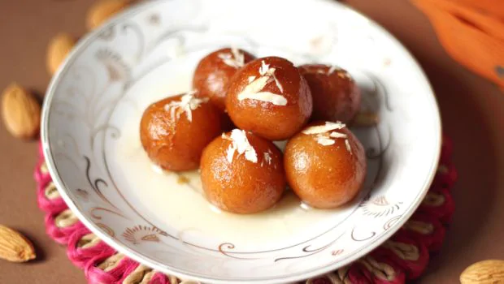

Ingredients Of Homemade Gulab Jamun
|
 |
Welcome to my Kitchen
Prepare Gulab Jamun Balls: 1.Take the grated Khoya in a medium size deep bowl. 2.Add baking soda and maida. Combine them thoroughly but gently using a spoon. 3.Add a teaspoon of milk to it and knead all of them together to make a smooth and soft dough. Add another teaspoon of milk if required. 4.Make sure that the dough is a bit softer to avoid cracking of ball while deep frying. 6.Now heat ghee in a pan over medium flame and add the Jamun balls to deep-fry them. Cook evenly until it becomes golden brown. 7.Make sure that you do not cook on high flame otherwise the balls will burn. 8.Now drain and let them cool for few minutes. 9.Then immerse the gulab jamuns in the warm sugar syrup for at least 30 minutes. It increases in size when it soaks the sugar syrup. 10.Hot and tasty sweet dish is ready to serve.